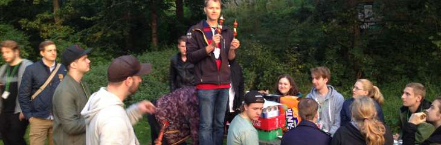
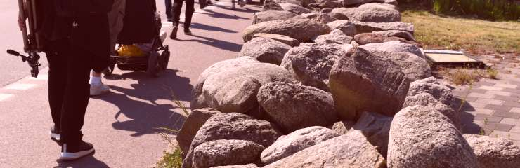

GrillCon 2019 Vår
Vårens GrillCon går av stapeln 16, 17 och 18 maj 2019.
Det blir Hackathon-torsdag med kvällsmat på Biobaren, konferens-fredag med klassisk grill och utflykts-lördag med fotoklubben.
Ta chansen att lära dig nya saker samtidigt som du umgås med befintliga och gamla studenter. Ett strålande tillfälle att nätverka och skaffa livslånga kontaktnät av programmerare och likasinnade. Som tidigare student är detta en utmärkt möjlighet att besöka din gamla skola och träffa gamla studiekamrater eller försöka smygrekrytera de som går ut.
#Övergripande planering
Det övergripande schemat ser ut så här.
| Dag | Tid | Vad händer? |
|---|---|---|
| Torsdag | 10-17 | Hackathon i labbsalen |
| 18- | Kvällsmat på Biobaren | |
| Fredag | 10-15 | Konferens |
| 15-17 | Förberedelse inför grill och kubb | |
| 17- | Klassisk Grill | |
| Lördag | 09-15 | Utflykt med fotoklubben |
Här följer mer information om respektive programpunkt.
#Torsdag: Hackathon och Capture The Flag med Vidar
Vår variant av Hackathon är programmeringsstuga i labbsalen på torsdagen, då hänger lärare, studenter och tillresande i labbsalen. Välkommen att delta genom att förlägga din arbetsdag till labbsalen och insupa atmosfären. Koda loss eller sitt och prata med likasinnade.

Vidar Tedenbrant (?), med fånga flaggan
Denna torsdag kommer Vidar “Lenore” Tedenbrant att hålla i en session av Capture The Flag (CTF) där du kan tävla om att fånga flaggorna i de säkerhetsrelaterade CTF:er som Vidar och hans kollegor har skapat.
Bakom sig har Vidar studentorganisationen Sektionen för Internetbaserad Socialisering (SIS) och en del studenter från utbildningsprogrammet Civilingenjör i datorsäkerhet.
Följande hållpunkter finns då Vidar styr upp verksamheten.
| Dag | Tid | Vad händer? |
|---|---|---|
| Torsdag | 10:15 | Vidar visar en handfull enkla CTF:er som man kan träna på. |
| 13:15 | Vidar öppnar den riktiga tävlingen där du samlar poäng för varje CTF du fångar och tävlar med andra. |
Vi har ryktesvägen hört att ett par studenter från civsäk kommer att delta i tävlingen, kanske kan vi från dem lära oss en del om hur man fångar CTF:er.
#Torsdag kväll: Mat på BioBar
På torsdagskvällen är det mat på Biobaren och mingel på det sättet som programmerare minglar…
BioBar är förbokad och föranmälan krävs. Man är naturligtvis ändå välkommen att försöka droppa in på eget bevåg och eget ansvar.
#Fredag: Konferensdag
Plats: Sal H429 alternativt G404 (beror på antalet anmälningar).
Konferensdelen pågår 10-15 med paus för lunch klockan 12-13.
Följande är övergripande schemat för seminarierna.
| Tid | Vad händer? |
|---|---|
| 10:00 | Samling och mingel |
| 10:10 | Konferensen öppnas (mos) |
| 10:15 | Teknologi-snick-snack (pecha kucha) |
| - Peter Hamfelt | |
| - Andreas Arnesson | |
| 11:10 | Regexp med Rex |
| 11:45 | Regexp tävling (mos) |
| 12:00 | Lunch |
| 13:00 | Samling och mingel |
| 13:10 | Eftermiddagen öppnas (mos) |
| 13:15 | Emil om “The Big Three ++” (JS ramverk) |
| 14:10 | Jane om att bli chef för programmerare. |
#Kl 10: Teknologi-snick-snack
Här kör vi kort-korta presentationer som följer en gemensam form likt Pecha kucha. Det är ett upplägg om 20 slides á 20 sekunder (6 minuter och 40 sekunder) följt av frågestund.
Gongongen ringer högt när tiden gått ut. Talaren vinner om hen håller tiden.
Presentatörer äro följande.
| Presentatör | Titel |
|---|---|
| Peter Hamfelt | Erfarenheter av att utveckla en intelligent chattbot. |
| Andreas Arnesson | Vad innebär DevOps? |
Här följer mer information om respektive föredrag och fördragshållare under pecha kucha sessionen.
#Peter om en intelligent chattbott

Peter Hamfelt, utvecklare och framtida chef
Peter Hamfelt, student på Software Engineering och allmänt aktiv som ansvarig på KIDS (idrottsföreningen för studenter på BTH) och ledamot i utbildningsföreningen BITS).
Peter hinner även med sina studier som nu omfattar ett grupprojekt där en intelligent chattklient/chattbot utvecklas för att automatisk besvara frågor likt en kundtjänst.
Peter kommer prata om tekniken i sig och erfarenheter från projektet.
#Andreas förklarar begreppet DevOps

Andreas Arnesson, koll på DevOps
Andreas Arnesson, aka zeldah, före detta student på Software Engineering som jobbat som programutvecklare på Ericsson och nu jobbar på Blekinge Tekniska Högskola kommer att berätta vad begreppet “DevOps” handlar om.
Men vad innebär termen egentligen? De flesta gör koppling till CI/CD (Continous Integration/Delivery) för att automatisera arbete och kanske att utvecklare ska jobba tätare med operations folket. Men DevOps är så mycket mer, det är en kultur och arbetssätt hela företag behöver anamma.
Andreas är killen som har koll på DevOps.
#Kl 11: Regex med Rex

Leopold Olsson, Cybercom Group
Leopold Olsson, aka bobbzorzen, har alltid haft en förkärlek till reguljära uttryck och kommer nu hit för att ge oss en genväg in i en underbar värld av ett kraftfullt verktyg som kan se ut så här:
/^[Ll]eo(?:pold)?$/
Leo gick ut programmet Webbprogrammering för ett antal år sedan och flyttade till Jönköping för att jobba på Cybercom Group som konsult och software developer. Leo har varvat med olika uppdrag såsom att programmera automatiserade tester till gräsklippare på Huskvarna med uppdrag inom undervisning av Python på Jönköping University.
Nu är Leo på en allmän konferensresa och besöker oss alltså för att prata om ett av sina stora intressen, reguljära uttryck. Missa inte möjligheten att lära dig regex på en timme, med Rex, som han också kallas.
#Kl 13: Emil med The Big Three ++ (JS ramverk)

Emil Folino, attityd om JavaScript ramverk
Emil Folino inleder eftermiddagen med en Pecha Kucha om “The Big Three ++” som handlar om de tre stora dominerande ramverken i JavaScript-världen - Angular, React, Vue. Dessutom tar Emil upp mindre varianter såsom Mithril och renodlad JavaScript-kod, det är “++” delen.
Sammanhanget är hur man bygger Single Page Application (SPA) webbklienter och hur kan kan tänka inför valet av teknik. Dessa tekniker är nog för tillfället en av de mer heta och efterfrågade förmågorna i platsannonser.
Emil har lovat att avsluta sin presentation med lite attityd och en bestämd uppfattning om vad som är rätt val.
Efter presentationen har vi en modererad diskussion, uppstyrd av moderator-mos, om de olika ramverken och hur man kan tänka kring val av JavaScript ramverk till olika projekt.
Vi diskuterar teknikval av JavaScript ramvkerk ur olika aspekter, några äro följande.
- Teknikval vid utbildning
- Teknikval vid stordrift (många programmerare, stora projekt)
- Teknikval med duktiga JavaScript-utvecklare
- Underhåll och vidarutvecklingsaspekter
- Hur ser marknaden ut om ett par år
#Kl 14: Jane om att vara chef för programmarere

Jane Strandberg, Prisjakt
Jane Strandberg, aka Sylvanas, är en välkänd profil på dbwebb, grillcon och BTH. Jane gick ut programmet Webbprogrammering och stannade sedan några år för att undervisa på BTH. Därefter fortsatte Jane till Malmö för att jobba som programmerare på Prisjakt. Efter något år på Prisjakt blev Jane erbjuden en position som chef och teamledare över en grupp av programmerare på Prisjakt.
Jane kommer nu hit för att prata om hur det är att vara chef för programmerare och hur det känns att lyftas upp som chef över sina forna kollegor. Låt oss fråga henne om ens syn förändras på verksamheten när man går från programmerare till chef.
Kanske kan vi få lite tips och trix om hur man manipulerar sin chef kanske, om det går? Eller vad man behöver göra för att få en chefsroll, vilka kvaliteter är det som en chef behöver?
#Fredag: Klassisk Grill


Grillspett i sann spiritualistisk anda.
Traditionell grill med förrätt, varmrätt, efterrätt och snacks.
Förhoppningsvis har någon hackat och preppat inför grillspetten. Har vi ännu mer tur har någon handlat och det finns en grill som vi kan låna och någon som bär den till grillplatsen.
Under kvällen sker bland annat följande:
- WM i kubb, utmana lärarteamet som alltid brukar vinna (man minns det man vill).
- Riktigt svår tipspromenad av Daniel.
- Prisutdelning för WM i Uptime 2018/2019.
I år har vi ett tält om det börjar regna.
så här kan det se ut när vi grillar, i vått och torrt. Mest vått i höstas när stormen Knud kom på besök.
#Lördag: Utflykt med Fotoklubben


Vårutflykten 2017 gick till Aspö.
Utflykten pågår ungefär mellan 09-15. Plats för starten meddelas senare tillsammans med fler detaljer om dagen.
Anmälan behövs eftersom vi samordnar bilar till platsen för utflykten. Prata med mos om du är osäker på hur det funkar.
Utflykten arrangeras av dbwebb’s Foto- och Fritidsklubb. Det blir ett hemligt resmål som innebär enklare vandring/promenad bland sevärdheter och natur. En halvdagsutflykt i (hav), skog och mark i all enkelhet. Ta med egen matsäck, kläder för väder och en kamera om andan faller på.
Du kan se videos med fotokollage från några av de tidigare utflykterna.
Fotoklubben håller till i forumet.
#Hitta hit
Här är vi.
#Parkera vid BTH
Det är fri parkering men du behöver ett parkeringskort att lägga i framrutan. Du kan hämta parkeringskortet i receptionen, byggnaden som ser ut som en rund badtunna i trä i extra stort format.
#Arrangörer
Den Executiva Kommittén sköter all planering och träffas en gång i månaden, året runt. Här nämns (några av) de som deltagit under 2018/19.
- Daniel Persson, kh31d4r, sekreterare (representerar industrin och gamla PT:are)
- Björn Andersson (representant BITS, Webb)
- Peter Hamfelt (representant BITS, SE)
- Vidar Tedenbrant, Leonore (representant SIS, Webb)
- Mikael Roos, mos, diktator (representant BTH, dbwebb, Webb, gamla PT:are)
BITS är utbildningsföreningen för “Blekinge Ingenjörstekniska Studenter”.
SIS är studentföreningen “Sektionen för Internetbaserad Socialisering”.
BTH är Blekinge Tekniska Högskola.
Beteckningen dbwebb representerar den allmänna community som finns kring webbplatsen dbwebb.se och de kurser som där bedrivs.
Lärarteamet kring dbwebb med Kenneth Lewenhagen, Andreas Arnesson, Emil Folino (och mos) är aktiva i allmän planering och genomförande av evenemanget.
PT:are är studenter som vid BTH gått ett utbildningsprogram inom Programvaruteknik, någon gång sedan starten 1990. Här inkluderas bland annat utbildningarna Programvaruteknik, Programvaruingenjör, (International) Software Engineer, Webbprogrammering.
SE är utbildningsprogrammet “Software Engineering” (och “International Software Engineering”).
Web är utbildningsprogrammen “Webbprogrammering 180hp campus” och “Webbprogrammering 120hp distans”.
#Revision history
- 2019-03-27: (A, mos) Inför GrillCon 2019 vår.